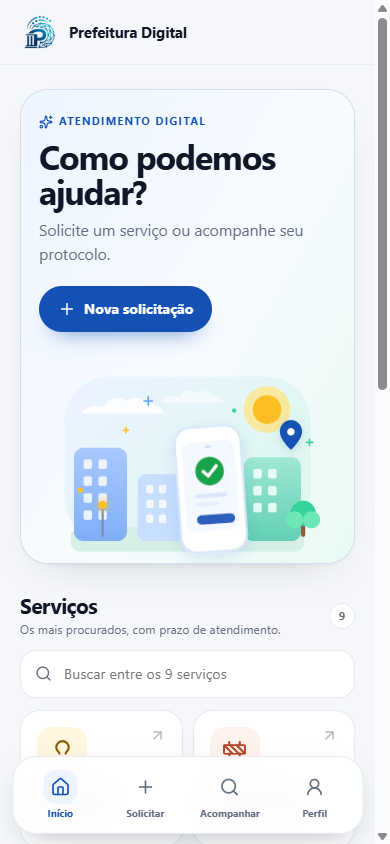
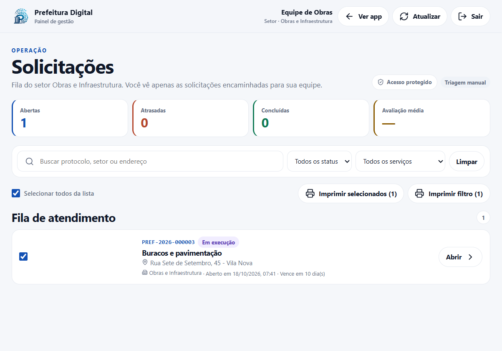
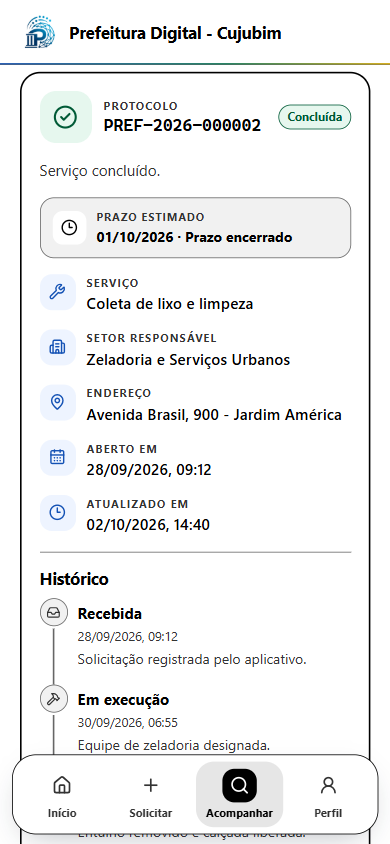
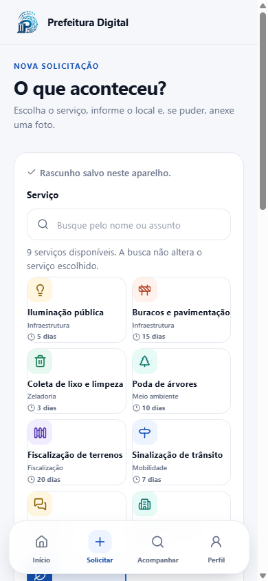

O problema
A demanda existe, mas a cidade não a enxerga por inteiro.
A Prefeitura Digital transforma cada pedido do cidadão em um protocolo com responsável, prazo, histórico e resultado — do primeiro clique à conclusão.
Para o Gabinete do Prefeito, Secretarias e Câmara Municipal

Boa tarde. O objetivo desta apresentação não é convencer Vossas Excelências de que a tecnologia resolve tudo. É mostrar como uma plataforma simples, já construída e testada, pode devolver clareza ao atendimento público.
A pergunta central é: quantos pedidos chegam à prefeitura todos os dias e quantos deles conseguimos enxergar, acompanhar e comprovar? A Prefeitura Digital nasce dessa pergunta.
Do problema real à decisão de avançar. Em 25 minutos, vamos percorrer a solução, a demonstração, os controles de segurança e o impacto estimado.
A demanda existe, mas a cidade não a enxerga por inteiro.
Um canal único, do cidadão à conclusão, com protocolo e histórico.
O app do cidadão e o painel de gestão em funcionamento.
Confiança desde o desenho, com rastreabilidade de ponta a ponta.
Números, projeções e benefícios para a administração e a população.
O que propomos para os próximos 90 dias e o que precisamos decidir.
O roteiro está dividido em seis blocos. Os três primeiros respondem “o que é e como funciona”. Os três últimos respondem “por que confiar, quanto impacta e o que decidir”.
Se o tempo estiver curto, os slides 17 a 21 podem ser apresentados em bloco, com foco nas premissas e nos três gráficos principais.
A demanda chega por telefone, e-mail, WhatsApp e balcão. Cada canal produz um registro diferente — e nenhum deles garante protocolo, prazo ou histórico. O resultado é fila, retrabalho e desconfiança.
O pedido foi feito por telefone, mas não há número para acompanhar.
A prefeitura não consegue agrupar, priorizar nem medir a reincidência.
Volta para pedir mais informação. O cidadão precisa ligar de novo.
Estas três imagens representam o tipo de demanda que toda prefeitura recebe. O problema não é a falta de pedidos. É a falta de um lugar único onde o pedido exista com começo, meio e fim.
Quando o cidadão liga, ele não recebe protocolo. Quando manda mensagem, o registro fica no celular de um servidor. Quando vai ao balcão, o papel se perde. A gestão não consegue responder a pergunta mais básica: “quantos pedidos temos, de quê e em que pé estão?”.
“ Do primeiro clique à conclusão, cada pedido tem protocolo, responsável, prazo e histórico.
Sem cadastro, sem senha, sem fila.
Fila por setor, prioridade e SLA.
Dados minimizados e acessos controlados.
Quem, quando, onde e por quê.
Esta é a ideia em uma frase: um único caminho para toda solicitação. Não importa se o pedido entrou pelo app, pelo telefone ou pelo balcão. Ele precisa existir em um lugar só, com protocolo, responsável, prazo e histórico.
Os quatro pilares são os critérios de decisão: simplicidade para o cidadão, clareza para a gestão, segurança por padrão e auditoria de ponta a ponta.
O cidadão tem uma porta de entrada simples. A gestão tem uma mesa de trabalho completa. Os dois lados leem e escrevem na mesma base, com as mesmas regras.

9 serviços, app + painel, offline, acessibilidade, testes automatizados e trilha de auditoria.
Banco transacional, gov.br, push, integrações de OS, LGPD/DPIA e operação 24×7.
A plataforma tem duas metades. A primeira é o app do cidadão: leve, sem login, com protocolo e código de acesso. A segunda é o painel de gestão: fila por setor, triagem, transferência, impressão e indicadores.
O ponto importante é que não são dois sistemas. É uma API só, com as mesmas regras. O que o cidadão vê e o que a gestão vê são recortes diferentes da mesma verdade.
O cidadão escolhe o serviço, descreve o problema, anexa uma foto e recebe um protocolo na hora. Depois, acompanha cada etapa pelo celular.
9 categorias, busca sem acento e prazo estimado.
Foto, CEP assistido e geolocalização opcionais.
Formato PREF-AAAA-000000 + código de acesso.
Status, prazo, histórico e setor responsável.
De 1 a 5 estrelas após a conclusão.

A jornada tem cinco passos. O cidadão não cria conta, não escolhe senha e não baixa nada de loja de aplicativos. Ele abre o app, escolhe o serviço, anexa uma foto se quiser e recebe um protocolo.
O código de acesso é a chave do pedido. Ele é gerado no aparelho e o servidor guarda apenas o hash. Isso significa que nem quem administra o banco consegue ler o código em texto claro.
PWA é uma aplicação web que instala no celular, abre como app e continua funcionando quando a conexão cai. Não depende de loja de aplicativos nem de dois times de desenvolvimento.
“Adicionar à tela de início” no Android e no iPhone, sem passar pela loja.
Telas visitadas e rascunhos continuam disponíveis; a fila reenvia ao reconectar.
Uma base de código, atualização imediata e menos custo de manutenção.
Fonte ampliada, alto contraste, teclado e alvos de toque de 44 px.
PWA não é um app menor. É uma escolha de arquitetura: uma base só, que roda no navegador e instala no celular. Para a prefeitura, isso reduz custo e acelera a correção de problemas.
Para o cidadão, a diferença aparece na prática: o app abre rápido, funciona com internet instável e não ocupa espaço como um aplicativo tradicional.

Estas são telas reais do piloto. A Home mostra os avisos e a busca. A nova solicitação tem rascunho automático, foto e localização. O acompanhamento mostra status, prazo e histórico.
Vale destacar a busca sem acento: o cidadão digita “iluminacao” e encontra “Iluminação pública”. Parece detalhe, mas é a diferença entre conseguir e desistir.
A triagem central recebe tudo. Cada secretaria vê apenas o que é seu. O gestor acompanha prazos, prioridades e satisfação sem pedir planilha.
Este é o painel de gestão. A triagem vê tudo; cada secretaria vê apenas a própria fila. O gestor tem indicadores de abertas, atrasadas, concluídas e avaliação média.
A transferência é um ponto crítico: ela exige motivo, fica registrada e preserva o prazo original por padrão. Isso evita o “empurra-empurra” sem justificativa.
O aplicativo é a porta de entrada. A API valida, autoriza, registra e calcula prazos. A gestão trabalha sobre a mesma base — sem ilhas de informação.
Esta é a arquitetura em uma imagem. O cidadão e a gestão são canais. A API concentra validação, autorização, prazos e segurança. Os dados, a auditoria e os relatórios ficam na base.
A frase importante é: o frontend não é a fonte da verdade. Ele é a interface. Quem decide se um pedido pode ser visto, alterado ou transferido é o servidor.
A plataforma foi desenhada para quem tem pressa, para quem tem pouca familiaridade digital e para quem está em um bairro com conexão instável.
De 320 px a 1440 px, sem overflow e com áreas de toque confortáveis.
Rascunho e fila local; nada se perde quando a rede cai.
Fonte ampliada, alto contraste, teclado e foco visível.
Status e prazos em português claro, sem jargão técnico.
Protocolo + código de acesso. Menos atrito para o cidadão.
Validação junto ao campo e mensagens que dizem o que fazer.
Usabilidade não é enfeite. É a diferença entre um serviço que existe e um serviço que a pessoa consegue usar. O piloto foi desenhado para telas pequenas, conexão ruim e pouca familiaridade digital.
Os três minutos são uma meta de experiência. O número será medido com usuários reais na fase de validação, não apenas no ambiente de demonstração.
A segurança está distribuída em camadas: no canal, na identidade, na autorização, no dado e na operação. Nenhuma delas depende de o usuário “fazer a coisa certa”.
HTTPS em produção, CORS restrito com credenciais e cabeçalhos que não expõem a stack.
Sessão em cookie HttpOnly; código de acesso gerado no aparelho e nunca enviado na URL.
Papéis admin, triagem e setor. O escopo é aplicado no servidor, inclusive em acesso direto.
Hash SHA-256 do código; senhas com scrypt e sal; respostas públicas sanitizadas e minimizadas.
Rate limit por IP, limite de corpo, validação de entrada e erros padronizados sem vazamento.
Histórico de eventos, transferências com motivo e rastreabilidade para controle interno e externo.
Segurança não é um botão que se liga no final. São camadas. O canal é HTTPS; a identidade é o cookie HttpOnly e o código de acesso; a autorização é por papel e setor; o dado é minimizado e hasheado; a operação tem limites; e a auditoria registra o que aconteceu.
É importante ser transparente: o piloto já implementa esses controles, mas produção exige endurecimento adicional — HTTPS obrigatório, cookie Secure, banco transacional e auditoria centralizada.
O cidadão informa apenas o necessário para o atendimento. O contato é opcional. O código de acesso não é armazenado em texto claro. O que é interno permanece interno.
A LGPD não é um obstáculo; é um critério de projeto. O app coleta o mínimo: tipo, descrição, endereço e, se o cidadão quiser, contato, foto e localização. O contato é opcional.
O código de acesso é armazenado como hash. O que é interno — contato, clientId, motivo de transferência, metadados de triagem — não aparece na consulta pública. Para produção, ainda precisamos de DPIA, DPO, base legal e prazo de retenção.
Cada mudança de status, transferência ou avaliação gera um evento com data, hora, responsável e observação. O histórico é a memória da gestão — e a prova para o controle externo.
Protocolo PREF-2026-000123 · “Solicitação registrada pelo aplicativo.”
Cidadão · canal digitalEncaminhado para Obras e Infraestrutura.
Equipe de TriagemObras → Zeladoria. Motivo registrado; SLA original preservado.
Gestor de ObrasEquipe designada para vistoria no local.
Equipe de ZeladoriaServiço concluído; cidadão avaliou com 5 estrelas.
Equipe de ZeladoriaEsta é a linha do tempo de um pedido. Cada evento tem data, hora, autor e observação. A transferência tem motivo e setor de origem e destino. O prazo original é preservado por padrão.
Isso não serve apenas para o cidadão. Serve para o gestor, para o controle interno e para o Tribunal de Contas. Se houver questionamento, a resposta está registrada.
A plataforma reduz o tempo gasto com registro, retorno e retrabalho. A equipe ganha fôlego para vistoria, fiscalização, atendimento prioritário e decisão.
A pergunta que sempre aparece: “isso vai substituir servidores?”. A resposta é não. O que a plataforma faz é reduzir o tempo gasto com registro, retorno e retrabalho. Esse tempo volta para vistoria, fiscalização e atendimento prioritário.
No cenário base, são 15 minutos economizados por solicitação migrada. No primeiro ano, isso representa 2.844 horas — cerca de 2,1 servidores equivalentes em regime. É capacidade, não demissão.
A resposta deixa de depender de sorte ou de insistência. O cidadão sabe que o pedido existe, quem é o responsável e quando será atendido.
O benefício para o cidadão é concreto: protocolo na hora, acompanhamento 24 horas, prazo claro e menos deslocamento. A avaliação fecha o ciclo: o cidadão diz se o serviço resolveu.
Maria é um cenário ilustrativo, não um depoimento real. Mas representa o que o piloto já permite: abrir um pedido com foto e localização e acompanhar sem ligar para a prefeitura.
Não vendemos certeza. Apresentamos um cenário de referência, com variáveis explícitas, para que a decisão seja tomada com transparência e possa ser recalibrada com os dados reais do município.
| População de referência | 100.000 habitantes |
|---|---|
| Demanda atual | 1.800 solicitações/mês |
| Adoção do canal digital | 25% no mês 1 → 70% no mês 12 |
| Tempo economizado | 15 min por solicitação migrada |
| Custo-hora da equipe | R$ 42 (carregado) |
| Pedidos que geram deslocamento | 30% |
| Deslocamentos evitáveis | 75% pelo canal digital |
| Prazo atual | 62% dos pedidos no prazo |
| Meta com a plataforma | 85% dos pedidos no prazo |
Antes de mostrar qualquer número, quero deixar as premissas abertas. O cenário de referência é um município de 100 mil habitantes, com 1.800 solicitações por mês. A adoção começa em 25% e chega a 70% no mês 12.
A faixa vai de R$ 67 mil a R$ 332 mil por ano em capacidade operacional liberada. O cenário base é R$ 159 mil. São estimativas para planejar, não promessas. O simulador no slide 21 permite ajustar ao tamanho da nossa cidade.
A projeção parte de 25% de adoção no primeiro mês e chega a 70% no mês 12 — uma rampa conservadora, sem considerar campanhas massivas de comunicação.
Cenário base · 1.800 solicitações/mês · adoção de 25% a 70% · dados mensais projetados.
O gráfico mostra a demanda total em cinza, constante em 1.800 por mês, e a parcela atendida pelo app em azul, subindo de 450 para 1.260. A área azul é o que sai do atendimento manual.
A rampa é conservadora: 25% no primeiro mês e 70% no mês 12. Se a comunicação for bem feita, a adoção pode ser mais rápida. Se for mais lenta, o simulador mostra o impacto.
Com 15 minutos economizados por solicitação migrada, a operação libera horas que hoje são consumidas por registro, retorno e retrabalho.
Cenário base · 15 min por solicitação migrada · custo-hora de R$ 42 · 1.760 h/ano por servidor.
A curva de horas liberadas acompanha a adoção. No mês 12, são 315 horas por mês. No primeiro ano, 2.844 horas. Em regime, 3.780 horas por ano, o equivalente a 2,1 servidores.
Repito: não é demissão. É capacidade. A equipe pode ser realocada para o que exige presença humana: vistoria, fiscalização, atendimento prioritário e decisão.
O impacto não fica no painel. Ele aparece na rua: menos idas ao prédio público, mais pedidos concluídos no prazo e mais tempo para a família.
Cenário base · 30% dos pedidos geram deslocamento · 75% evitáveis pelo canal digital · 2 h e R$ 16 por deslocamento.
Aqui estão os dois benefícios que a população sente. A linha azul mostra os atendimentos adicionais concluídos no prazo: 2.754 no primeiro ano. A linha verde mostra os deslocamentos presenciais evitados: 2.560 no primeiro ano.
Em regime, o benefício anual sobe para quase 5 mil atendimentos adicionais no prazo e 3.402 idas evitadas. São 6.804 horas devolvidas ao cidadão — tempo que ele não precisa gastar no balcão.
Mova as premissas e veja o impacto estimado. Os valores são de planejamento e servem para calibrar a conversa com cada secretaria.
Este é o slide mais interativo. Se a cidade tiver 200 mil habitantes, mova a população e a demanda. Se a adoção esperada for menor, mova a adoção. Os números se ajustam na hora.
O objetivo não é fixar uma promessa. É permitir que cada secretaria veja o impacto no seu contexto e que a decisão seja calibrada com dados reais.
O piloto já prova o fluxo. A produção exige endurecimento de infraestrutura e governança — não um recomeço.
Ambiente local · dados fictícios
2 secretarias · dados reais controlados
Toda a administração
A primeira etapa já está feita: o piloto funcional. A segunda é a produção assistida, com duas secretarias, dados reais controlados e todas as exigências de LGPD. A terceira é a expansão.
Cada etapa tem critérios de aceite. Não é um cronograma de promessas; é uma sequência de decisões com evidências.
Um projeto público não falha apenas por tecnologia. Falha por falta de dono, de integração, de treinamento ou de clareza sobre dados. Estes são os pontos que precisam de decisão.
| Risco | Decisão necessária | Dono |
|---|---|---|
| Dados reais e LGPD | Definir base legal, DPIA, DPO, prazo de retenção e direitos do titular.Critério: DPIA aprovada e base legal definida. | Gabinete · Jurídico · TI |
| Exclusão digital | Manter canais presenciais e telefônicos; treinar a rede de atendimento.Critério: canais alternativos mapeados e equipe treinada. | Secretarias · Comunicação |
| Integração com legados | Mapear OS, protocolo e cadastro; começar por duas integrações críticas.Critério: duas integrações críticas em produção assistida. | TI |
| Adoção interna | Nomear gestores de fila por setor e acordar metas por secretaria.Critério: gestores nomeados e metas por secretaria. | Secretarias |
| Sustentação e propriedade | Definir hospedagem, suporte, código e dados; evitar dependência de fornecedor.Critério: hospedagem, suporte e código documentados. | TI · Compras |
Os riscos não são técnicos apenas. O maior deles é a falta de dono. Se ninguém for responsável pela fila de cada secretaria, o sistema vira mais uma caixa de entrada abandonada.
Por isso a proposta inclui governança, treinamento e metas por secretaria. A tecnologia é a parte mais fácil; a operação é o que sustenta o resultado.
Não pedimos um contrato. Pedimos autorização para provar, medir e decidir com dados.
Duas secretarias, dados reais controlados e metas acordadas com a governança.
Gabinete, TI, Jurídico/LGPD, Comunicação e secretarias, com reuniões quinzenais.
Infraestrutura, integrações, treinamento e sustentação, com orçamento a ser detalhado.
O pedido é objetivo: autorizar um piloto assistido de 90 dias, criar um grupo de governança e autorizar o detalhamento do plano de produção. Não é um cheque em branco nem um contrato de longo prazo.
As metas do piloto são claras: 70% de adoção, 85% no prazo, 90% de satisfação e zero incidente crítico. Ao final, a governança decide com dados se avança, ajusta ou encerra.
Prefeitura Digital: menos fila, mais resposta. Menos retrabalho, mais cuidado.
Vamos começar pelo piloto?
Fecho com uma frase que resume o projeto: a tecnologia só faz sentido quando aproxima o governo das pessoas. O piloto está pronto. O próximo passo é medir com dados reais, com segurança e com governança.
Obrigado. Fico à disposição para as perguntas e para detalhar o plano dos próximos 90 dias.
Não é uma maquete. É um fluxo completo, com dados fictícios, pronto para ser endurecido para produção.
Este anexo serve para responder à pergunta “mas isso já existe ou é só ideia?”. Já existe: são 9 serviços, app, painel, offline, protocolo com hash, fila por setor, transferência, histórico, acessibilidade, segurança e testes.
O que não existe é o ambiente de produção com dados reais. Isso é a próxima etapa, com LGPD, infraestrutura e integrações.
Respostas curtas para as objeções mais comuns. O roteiro completo traz o aprofundamento de cada ponto.
Não. Complementa. Quem não tem celular ou prefere o balcão continua sendo atendido; a plataforma pode ser operada por um atendente.
Os canais atuais permanecem. O ganho é reduzir a pressão sobre eles e dar rastreabilidade também aos pedidos registrados por servidores.
O piloto já usa hash, sessão HttpOnly, escopo por setor e sanitização. Produção exige HTTPS, DPIA, DPO e banco transacional.
O piloto usa stack aberta, sem dependência paga. O custo de produção será detalhado após a definição de infraestrutura, integrações e suporte.
Não. Libera capacidade para vistoria, fiscalização, atendimento prioritário e decisão. O ganho é de qualidade, não de corte de pessoal.
WhatsApp é canal de entrada, não é protocolo auditável nem fila por setor. Pode ser integrado no futuro, sem substituir a base única.
Adoção, percentual no prazo, satisfação, tempo de resposta, retrabalho e redução de deslocamentos. As metas estão no slide 24.
Autorizar o piloto assistido de 90 dias, com duas secretarias, governança e dados reais controlados.
Este anexo é para o debate. As respostas são curtas de propósito; o roteiro em Markdown aprofunda cada uma. Se uma pergunta fugir do escopo, a resposta honesta é: “esse ponto precisa ser detalhado na etapa de produção”.
Toda projeção pode ser reproduzida. As fórmulas e os valores base estão abaixo; o simulador aplica as mesmas regras.
Este anexo existe para dar transparência. Qualquer pessoa pode refazer as contas com as fórmulas e os valores base. Se a cidade tiver números diferentes, o simulador ajusta.
As fontes são os documentos do próprio projeto, a LGPD, a WCAG 2.1 e as boas práticas de governo digital. Não há número mágico.